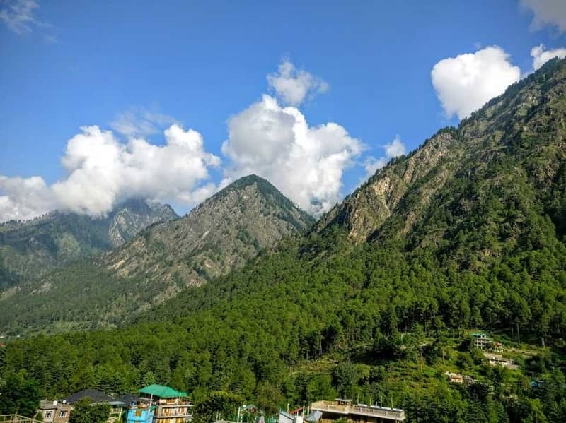
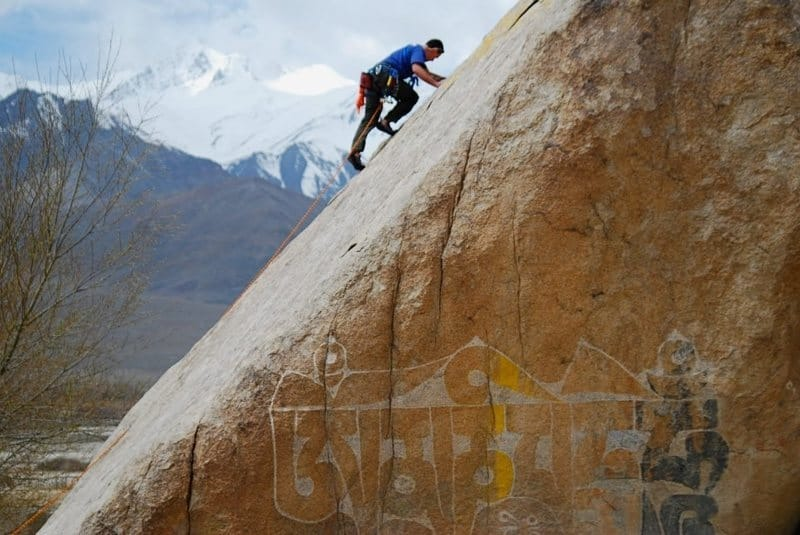
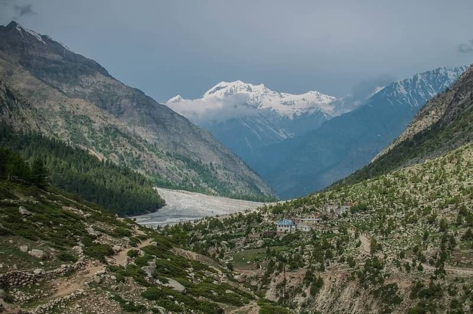

The scenic surroundings and the thrilling challenge makes rock climbing at the Miyar Valley interesting. Mountain or rock climbing at the Miyar Valley is ideal for both amateurs as well as experienced climbers. Add to the fun by visiting the Valley of Flowers that is located nearby.

Located close to Leh, the Shey Rock is one of the best spots for rock climbing in the Kashmir region. At the Shey Rock, you will find around 20 bottled sport routes that are ideal for climbing.
Difficulty levels range from easy to moderate and the safety facilities provided are top-notch. The Hiram Crack is the best place for rock climbing at the Shey Rock.

The scenic surroundings and the thrilling challenge makes rock climbing at the Miyar Valley interesting. Mountain or rock climbing at the Miyar Valley is ideal for both amateurs as well as experienced climbers. Add to the fun by visiting the Valley of Flowers that is located nearby.